<title>SQLRestoreSOS for Junior DBAs</title>
<link rel="stylesheet" href="https://fonts.googleapis.com/css2?family=IBM+Plex+Sans:wght@400;500;600&family=IBM+Plex+Mono:wght@400;500&family=IBM+Plex+Serif:wght@500;600&display=swap">
<style>
  /* Layout: one centred reading column (~68ch), code blocks and figures may be a little wider. */
  :root {
    --bg: #f6f8fa;
    --surface: #ffffff;
    --fg: #17212b;
    --muted: #5a6877;
    --rule: #d8dee5;
    --accent: #c4302b;       /* lifebuoy red, used for the SOS moments only */
    --link: #1b5fa8;
    --code-bg: #0f1720;
    --code-fg: #d9e2ec;
    --code-dim: #7f8fa0;
    --good: #1f8a4c;
    --warn: #b36b00;
    --font-display: "IBM Plex Serif", Georgia, "Times New Roman", serif;
    --font-body: "IBM Plex Sans", system-ui, -apple-system, "Segoe UI", sans-serif;
    --font-mono: "IBM Plex Mono", Consolas, "Cascadia Mono", monospace;
  }
  @media (prefers-color-scheme: dark) {
    :root:not([data-theme="light"]) {
      --bg: #0e141b; --surface: #151d26; --fg: #e4eaf0; --muted: #98a6b5; --rule: #27323e;
      --accent: #ff6a5f; --link: #7db8f2; --code-bg: #0a0f15; --code-fg: #d9e2ec; --code-dim: #6f8093;
      --good: #4cc27f; --warn: #e0a24a; color-scheme: dark;
    }
  }
  :root[data-theme="dark"] {
    --bg: #0e141b; --surface: #151d26; --fg: #e4eaf0; --muted: #98a6b5; --rule: #27323e;
    --accent: #ff6a5f; --link: #7db8f2; --code-bg: #0a0f15; --code-fg: #d9e2ec; --code-dim: #6f8093;
    --good: #4cc27f; --warn: #e0a24a; color-scheme: dark;
  }

  body { background: var(--bg); color: var(--fg); font-family: var(--font-body); font-size: 17px; line-height: 1.65; }
  main { max-width: 70ch; margin: 0 auto; padding-inline: 20px; padding-block: 48px 72px; }

  .kicker { font-family: var(--font-mono); font-size: 13px; letter-spacing: .06em; text-transform: uppercase; color: var(--accent); margin: 0 0 12px; }
  h1 { font-family: var(--font-display); font-weight: 600; font-size: clamp(30px, 5vw, 42px); line-height: 1.15; margin: 0 0 16px; text-wrap: balance; }
  .lede { font-size: 20px; color: var(--muted); margin: 0 0 8px; }
  .byline { font-size: 14px; color: var(--muted); margin: 0 0 40px; padding-bottom: 24px; border-bottom: 1px solid var(--rule); }

  h2 { font-family: var(--font-display); font-weight: 600; font-size: 27px; line-height: 1.25; margin: 52px 0 12px; text-wrap: balance; }
  h3 { font-size: 18px; font-weight: 600; margin: 28px 0 6px; }
  p { margin: 0 0 16px; }
  a { color: var(--link); }
  ul, ol { padding-left: 1.3em; margin: 0 0 16px; }
  li { margin-bottom: 6px; }
  strong { font-weight: 600; }

  code { font-family: var(--font-mono); font-size: .88em; background: color-mix(in srgb, var(--fg) 8%, transparent); padding: .1em .35em; border-radius: 4px; }
  pre { background: var(--code-bg); color: var(--code-fg); border-radius: 6px; padding: 16px 18px; margin: 18px 0 22px; overflow-x: auto; font-family: var(--font-mono); font-size: 14px; line-height: 1.55; }
  pre code { background: none; padding: 0; font-size: inherit; }
  pre .c { color: var(--code-dim); }
  .code-cap { font-size: 13px; color: var(--muted); margin: -12px 0 22px; }

  .figure { margin: 22px 0 28px; }
  .figure img { display: block; height: auto; border: 1px solid var(--rule); border-radius: 6px; background: #000; }
  .figure figcaption { font-size: 14px; color: var(--muted); margin-top: 8px; }
  .shot { border: 1.5px dashed var(--rule); border-radius: 6px; padding: 22px 18px; margin: 20px 0 24px; color: var(--muted); font-size: 14px; text-align: center; background: var(--surface); }

  .tag { font-family: var(--font-mono); font-size: 12px; letter-spacing: .05em; text-transform: uppercase; color: var(--muted); display: block; margin-bottom: 2px; }
  .scenario { border-top: 1px solid var(--rule); margin-top: 48px; padding-top: 4px; }
  .scenario h2 { margin-top: 20px; }

  .why { display: grid; gap: 14px; margin: 18px 0 24px; padding: 0; list-style: none; }
  .why li { background: var(--surface); border: 1px solid var(--rule); border-radius: 6px; padding: 14px 16px; margin: 0; }
  .why b { display: block; font-weight: 600; margin-bottom: 2px; }
  .why span { color: var(--muted); font-size: 15.5px; }

  .legend { display: grid; grid-template-columns: auto 1fr; gap: 6px 14px; margin: 14px 0 22px; font-size: 15.5px; }
  .legend dt { font-weight: 600; font-family: var(--font-mono); }
  .legend dd { margin: 0; color: var(--muted); }
  .ok { color: var(--good); } .bad { color: var(--accent); } .na { color: var(--muted); }

  .callout { border-left: 3px solid var(--accent); background: var(--surface); padding: 12px 16px; margin: 20px 0; border-radius: 0 6px 6px 0; }
  .callout p:last-child { margin-bottom: 0; }

  table { border-collapse: collapse; width: 100%; font-size: 15px; }
  .tablewrap { overflow-x: auto; margin: 16px 0 24px; border: 1px solid var(--rule); border-radius: 6px; background: var(--surface); }
  th, td { text-align: left; padding: 9px 12px; border-bottom: 1px solid var(--rule); vertical-align: top; }
  tr:last-child td { border-bottom: 0; }
  th { font-size: 13px; letter-spacing: .04em; text-transform: uppercase; color: var(--muted); font-weight: 600; }

  footer { margin-top: 56px; padding-top: 20px; border-top: 1px solid var(--rule); color: var(--muted); font-size: 14px; }
  :focus-visible { outline: 2px solid var(--link); outline-offset: 2px; }
</style>

<main>
  <p class="kicker">SQL Server · Backup &amp; Restore</p>
  <h1>A junior dev dropped a table. Now the junior DBA has to fix it.</h1>
  <p class="lede">A free Windows app that turns the best community restore procedure into three things a junior DBA can do under pressure: restore a full chain, stop at an exact time, and keep a copy in sync with log shipping.</p>
  <p class="byline">Ronald de Groot · dbaronald.nl</p>

  <p>It is 09:44. A junior developer is cleaning up test data and runs a <code>DROP TABLE</code>. It was not the test database. A minute later the first colleague shouts that the order screen is broken.</p>

  <p>The developer is white in the face. The senior DBA is on holiday. So it lands on the junior DBA: <em>get the table back, and do not make it worse.</em></p>

  <p>The tool most of us reach for is <code>sp_DatabaseRestore</code> from Brent Ozar's First Responder Kit. It is excellent: it reads a folder of backups, works out the chain, and runs the restore for you. It is also a procedure with dozens of parameters, and nobody is calm while reading the help text with a developer standing behind them.</p>

  <p>So I built <strong>SQLRestoreSOS</strong>. It does not replace <code>sp_DatabaseRestore</code>. It sits on top of it, shows you the exact call before anything runs, and lets you pick the things that matter with a mouse.</p>

  <h2>Why <code>sp_DatabaseRestore</code> is hard for a junior</h2>
  <p>None of this is the procedure's fault. It is just a lot to hold in your head at once.</p>
  <ul class="why">
    <li><b>The point in time is a string.</b><span><code>@StopAt</code> wants <code>yyyyMMddHHmmss</code> as text. Get one digit wrong and you restore to the wrong moment, or get an error.</span></li>
    <li><b><code>@ContinueLogs</code> does not mean what it sounds like.</b><span>It does not mean "also apply the logs". Logs are applied whenever a log folder is given. It means "skip the full, the database is already restoring".</span></li>
    <li><b>The "what happens to the existing database" switch is a number.</b><span><code>@ExistingDBAction</code> 0, 1, 2 or 3. Three of the four values are destructive.</span></li>
    <li><b>The server reads the backups, not you.</b><span>The SQL Server service account needs access to the share. Your own permissions are irrelevant, which is not obvious when the files are right there in Explorer.</span></li>
    <li><b>A STOPAT earlier than the full backup finished fails.</b><span>You find out only when the restore errors out half-way, and the target database is left in RESTORING.</span></li>
  </ul>

  <h2>What SQLRestoreSOS is</h2>
  <p>A dark-mode Windows desktop app. You connect to a SQL Server instance, pick a database, point it at your backup share and choose a point in time on a timeline. It then either shows you the T-SQL to copy and paste, or runs the restore itself and streams the output into a log.</p>
  <p>Under the hood it generates a plain <code>EXEC [dbo].[sp_DatabaseRestore] ...</code> call. You can read it, copy it, and run it in SSMS if you prefer. The app never hides what it is going to do.</p>

  <figure class="figure">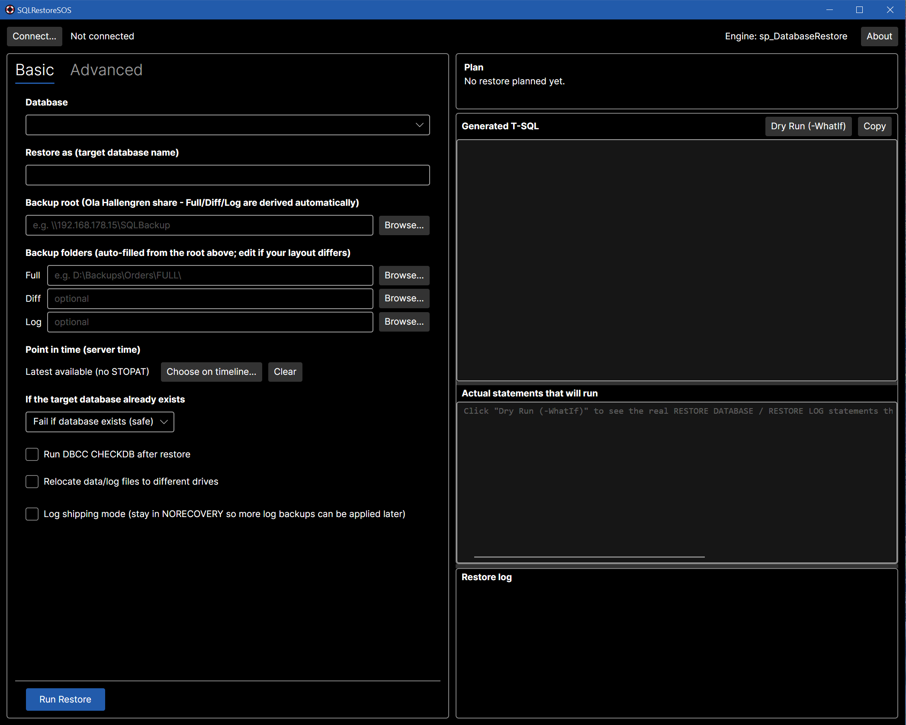<figcaption>The whole app on one screen. Form on the left; generated T-SQL, resolved statements and the restore log on the right. Each pane can be resized.</figcaption></figure>

  <!-- ======================= SCENARIO 1 ======================= -->
  <section class="scenario">
    <span class="tag">Scenario 1</span>
    <h2>Restore the full chain</h2>
    <p>The "everything is gone" case. You want the database back as of the latest backup.</p>
    <ol>
      <li>Click <strong>Connect…</strong> and choose your instance.</li>
      <li>Pick the <strong>Database</strong>. The app suggests a target name with a timestamp, so you restore <em>next to</em> the original instead of over it. That is exactly what you want when only one table is lost: production keeps running while you work.</li>
      <li>Enter the <strong>backup root</strong>, for example <code>\\fileserver\SQLBackup\SERVER\MyDb</code>. If you use Ola Hallengren's backup solution, the <code>FULL</code>, <code>DIFF</code> and <code>LOG</code> folders are filled in for you.</li>
      <li>Leave <em>Point in time</em> at <em>Latest available</em>.</li>
      <li>Click <strong>Run Restore</strong>. The button is pinned at the bottom of the window, so it is always where you expect it.</li>
    </ol>
    <figure class="figure">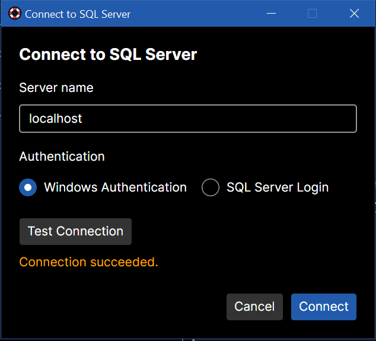<figcaption>Step 1: connect with Windows or SQL authentication. Test Connection tells you straight away if it works.</figcaption></figure>
    <figure class="figure">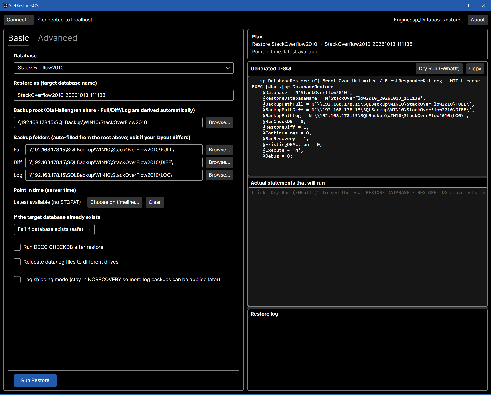<figcaption>Steps 2 to 4: pick the database and the backup root. The folders fill themselves in and the T-SQL appears on the right.</figcaption></figure>
    <p>That is the whole job. The generated call looks like this:</p>
<pre><code><span class="c">-- sp_DatabaseRestore (C) Brent Ozar Unlimited / FirstResponderKit.org - MIT License</span>
EXEC [dbo].[sp_DatabaseRestore]
    @Database = N'StackOverflow2010',
    @RestoreDatabaseName = N'StackOverflow2010_20261013_111138',
    @BackupPathFull = N'\\fileserver\SQLBackup\WIN10\StackOverFlow2010\FULL\',
    @BackupPathDiff = N'\\fileserver\SQLBackup\WIN10\StackOverFlow2010\DIFF\',
    @BackupPathLog  = N'\\fileserver\SQLBackup\WIN10\StackOverFlow2010\LOG\',
    @RestoreDiff = 1,
    @ContinueLogs = 0,
    @RunRecovery = 1,
    @ExistingDBAction = 0,
    @Execute = 'Y';</code></pre>
    <p>The procedure picks the newest full, the newest matching differential, and every log after that, and finishes with <code>WITH RECOVERY</code>.</p>

    <h3>Look before you leap: Dry Run</h3>
    <p>That call is short, but the procedure expands it into many statements. Click <strong>Dry Run (-WhatIf)</strong> and the app asks the procedure to list the real <code>RESTORE</code> commands without running them. Here the chain is one full, one differential and several logs, each with a plain-language comment.</p>
    <figure class="figure">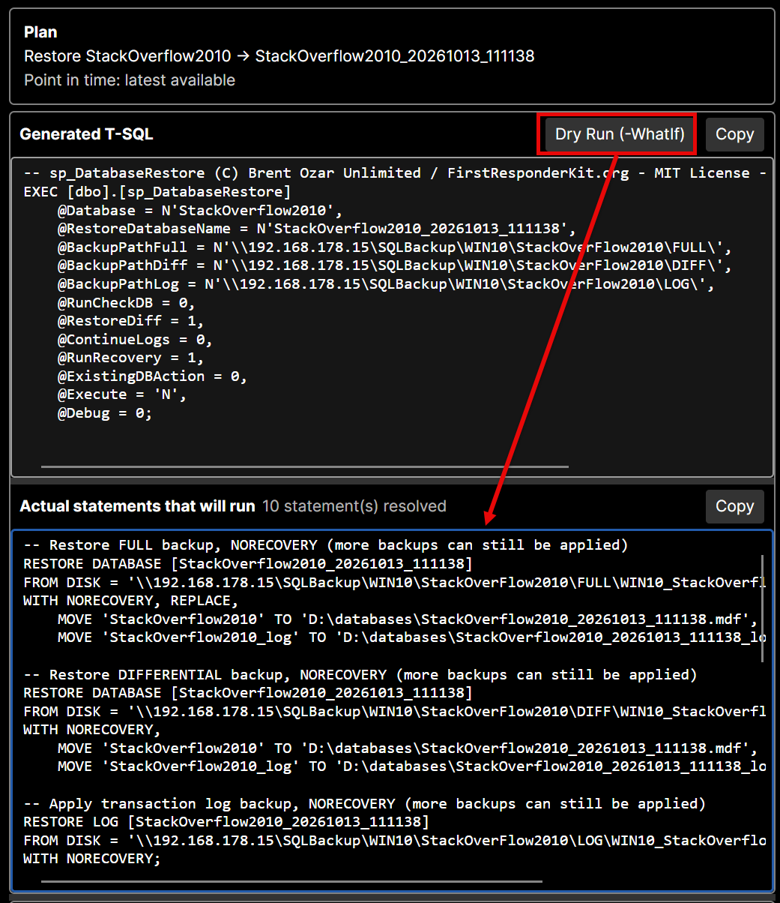<figcaption>Dry Run resolves the real statements. Nothing is executed; this is the moment to read them.</figcaption></figure>

    <h3>Prefer SSMS? Copy it there</h3>
    <p>You do not have to run anything from the app. <strong>Copy</strong> puts the resolved script on the clipboard. Paste it into SSMS, read it, and run it there if that is how your team works. Every statement ends in a semicolon, and the last one brings the database online.</p>
    <figure class="figure">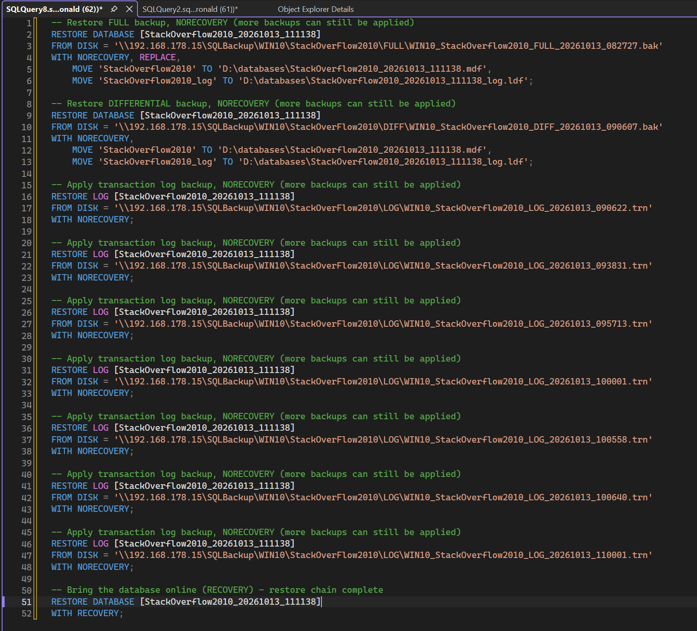<figcaption>The same chain in SSMS: FULL, DIFFERENTIAL, seven log backups, then <code>WITH RECOVERY</code>.</figcaption></figure>

    <h3>Run it</h3>
    <p>Click <strong>Run Restore</strong> and watch the <em>Restore log</em>. It streams what the server reports, statement by statement, and ends with <code>Restore completed.</code></p>
    <figure class="figure">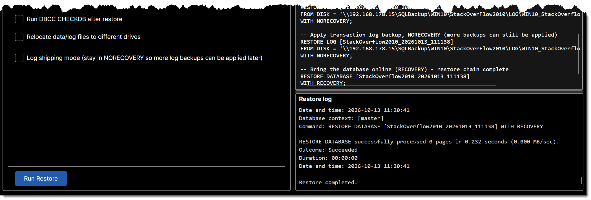<figcaption>The last lines of a finished restore. The database came online with <code>WITH RECOVERY</code>.</figcaption></figure>
  </section>

  <!-- ======================= SCENARIO 2 ======================= -->
  <section class="scenario">
    <span class="tag">Scenario 2</span>
    <h2>Stop at an exact time <span style="color:var(--muted);font-weight:500">(easy, easy!)</span></h2>
    <p>This is the one that saves careers. The table was dropped at about 09:44, so you want the database as it was a moment earlier. Ask the developer for the time and then go a little before it. A restore to "latest" would contain the drop, and you would be back where you started.</p>
    <p>Under <em>Point in time</em>, click <strong>Choose on timeline…</strong>. The app scans your backup folders and opens a large dialog with every backup in the order it was made.</p>

    <figure class="figure">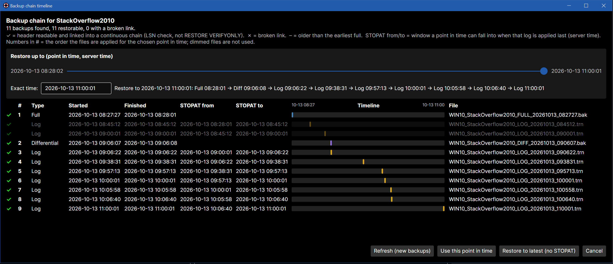<figcaption>The timeline dialog. Eleven backups, in the order they were made. With the slider at the far right, nine files are used and numbered; the two dimmed logs are older than the differential.</figcaption></figure>

    <p>Each row tells you what you need to know:</p>
    <dl class="legend">
      <dt><span class="ok">✓</span></dt><dd>The backup header is readable and it links into a continuous chain. This is an LSN check, not <code>RESTORE VERIFYONLY</code>, so it will not catch a corrupt backup body.</dd>
      <dt><span class="bad">✗</span></dt><dd>A link is missing: a gap in the log chain, or a differential whose full backup is gone.</dd>
      <dt><span class="na">–</span></dt><dd>Readable, but older than the earliest full, so it is not part of any chain.</dd>
      <dt>STOPAT from / to</dt><dd>For each log backup, the window a point in time can fall into when that log is the last one applied.</dd>
    </dl>

    <p>Now drag the <strong>slider</strong>, or type the time in the exact time box. As you move it, the files that will be used are <strong>numbered 1, 2, 3…</strong> in the order they are applied, and the rest are dimmed. At 09:43:48 the plan is the full, the differential and three logs:</p>
    <figure class="figure">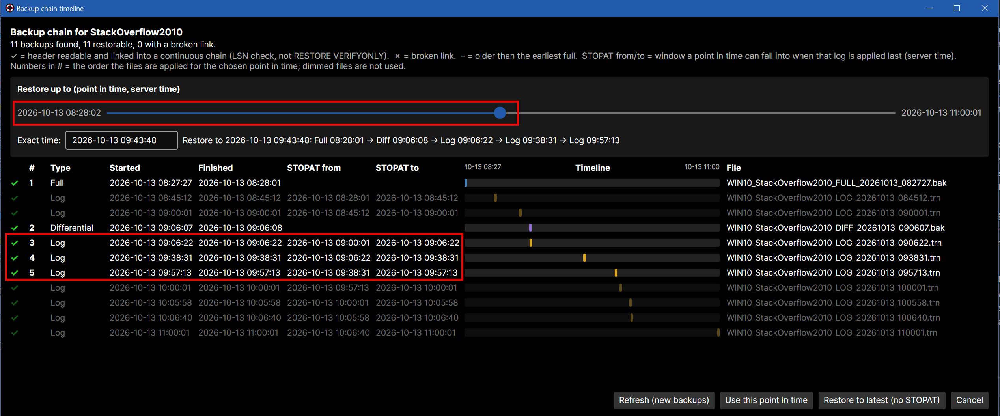<figcaption>Slider at 09:43:48. Files 1 to 5 are applied (full, differential, three logs). Everything after is dimmed because it is not needed.</figcaption></figure>
    <p>Click <strong>Use this point in time</strong> and the generated call gains one line:</p>
    <figure class="figure">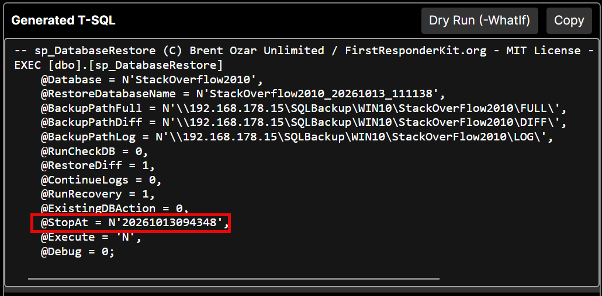<figcaption>The point in time becomes <code>@StopAt = N&#39;20261013094348&#39;</code>, the <code>yyyyMMddHHmmss</code> format you would otherwise have to type by hand.</figcaption></figure>
    <p>The resolved statements show the same time on each log restore, and SQL Server confirms where it stopped:</p>
    <figure class="figure">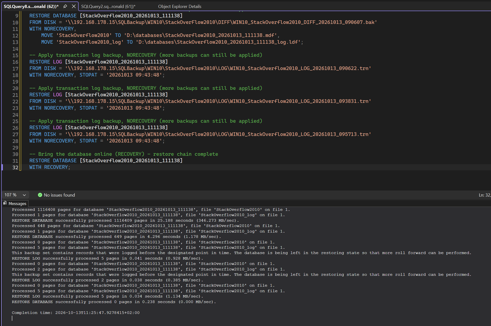<figcaption>Each log is restored <code>WITH NORECOVERY, STOPAT = &#39;20261013 09:43:48&#39;</code>, then <code>WITH RECOVERY</code> opens the database.</figcaption></figure>
    <div class="callout">
      <p><strong>The slider cannot start too early.</strong> Its left end is one second after the earliest full backup finished. A STOPAT before that is what makes SQL Server answer <em>"The specified STOPAT time is too early"</em> (Msg 4335) after you have already waited for the full to restore. The dialog shows a red message instead.</p>
    </div>
    <p>New backups arrive while you are thinking? <strong>Refresh (new backups)</strong> rescans the folders and keeps your chosen time.</p>

    <h3>Now get the table back</h3>
    <p>Click <strong>Run Restore</strong>. When it finishes you have a second database next to production, for example <code>StackOverflow2010_20261013_111138</code>, containing the table as it was at the chosen time. Production was never touched.</p>
    <p>The last step is a normal piece of T-SQL. The quickest way is to copy the table across:</p>
<pre><code><span class="c">-- Recreates the table with its data (no indexes, keys or defaults)</span>
SELECT *
INTO   [StackOverflow2010].[dbo].[Badges]
FROM   [StackOverflow2010_20261013_111138].[dbo].[Badges];</code></pre>
    <p>If the table has a primary key, indexes or constraints, script the table from the restored copy first (in SSMS: right-click the table, <em>Script Table as</em>, <em>CREATE To</em>), run that on production, and then fill it:</p>
<pre><code>INSERT INTO [StackOverflow2010].[dbo].[Badges] (Id, Name, UserId, Date)
SELECT Id, Name, UserId, Date
FROM   [StackOverflow2010_20261013_111138].[dbo].[Badges];</code></pre>
    <p>Check the row count, tell the developer, and drop the restored copy when you are done. If rows were added to that table between the chosen time and the drop, those few are lost. That is the price of a point in time, and it is the reason to pick the time carefully.</p>
    <div class="callout">
      <p>Resist the urge to restore over production. It is the most dangerous option in the list, it takes everything else that happened since that moment with it, and the app makes you tick a confirmation box before it will do it.</p>
    </div>
  </section>

  <!-- ======================= SCENARIO 3 ======================= -->
  <section class="scenario">
    <span class="tag">Scenario 3</span>
    <h2>Log shipping, without the scripts</h2>
    <p>Sometimes you do not want the database online yet. You want a copy that stays in <code>NORECOVERY</code> and keeps catching up as new log backups land: a warm standby, or a migration where you cut over at a planned moment.</p>

    <h3>1. Switch on log shipping mode</h3>
    <p>Tick <strong>Log shipping mode</strong>. Look at the generated call: <code>@RunRecovery = 0</code>. The restore will stay in <code>NORECOVERY</code> so more logs can be applied later.</p>
    <figure class="figure">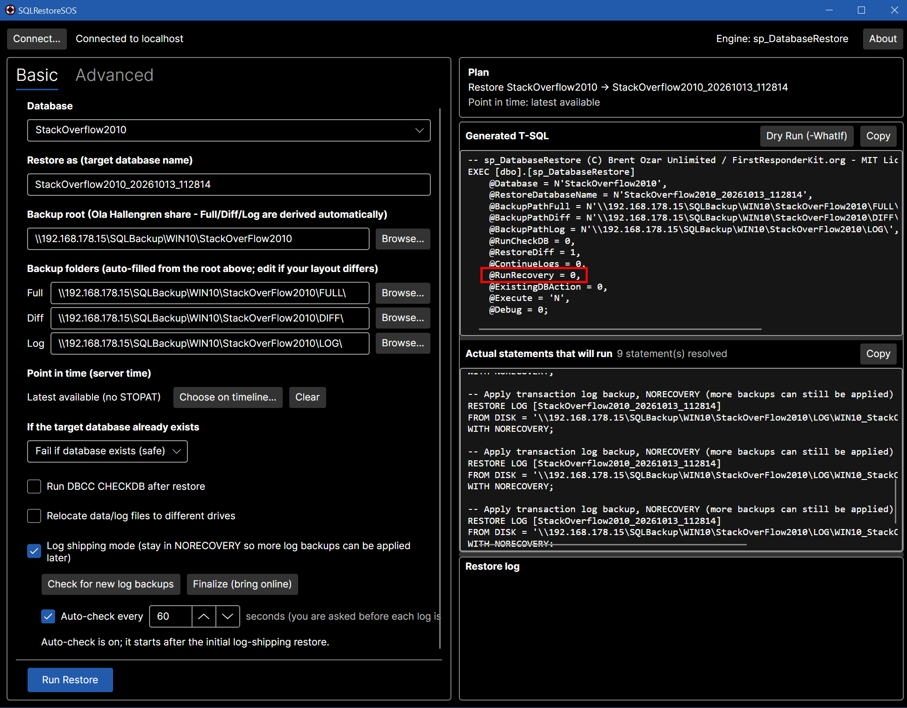<figcaption>Log shipping mode on. <code>@RunRecovery = 0</code> is highlighted; the new buttons and the auto-check interval appear under the checkbox.</figcaption></figure>

    <h3>2. Run the initial restore</h3>
    <p>Click <strong>Run Restore</strong> as in scenario 1. When it finishes, the database is not online. In SSMS it shows <em>(Restoring…)</em>, which is exactly what you want.</p>
    <figure class="figure">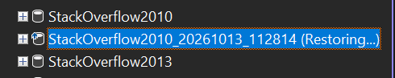<figcaption>The copy sits in <em>Restoring</em> and waits for more log backups.</figcaption></figure>

    <h3>3. Let it watch, and say yes or no</h3>
    <p>Tick <strong>Auto-check every [N] seconds</strong> (10 to 3600). The app watches the log folder. When a new log backup shows up you get a dialog with its name and time. <strong>Apply</strong> restores it and stays in <code>NORECOVERY</code>. <strong>Skip</strong> pauses the checking, because a later log cannot be applied without the one you skipped.</p>
    <figure class="figure">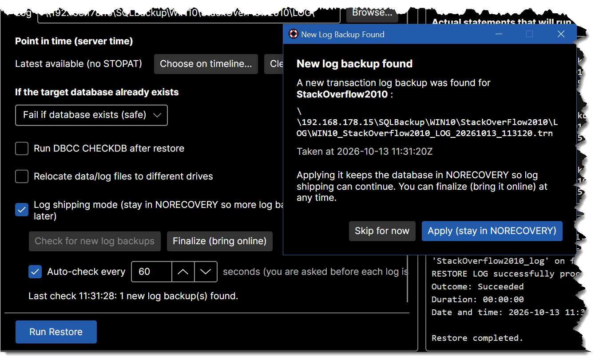<figcaption>A new log backup was found. Apply keeps the database in <code>NORECOVERY</code>; Skip pauses the watching.</figcaption></figure>
    <p>I deliberately did not make it apply logs automatically. For a junior DBA, a confirmation per log is a feature: you always know the state of the database. The status line under the buttons says when it last checked and what it applied.</p>

    <h3>4. Finalize on cutover day</h3>
    <p>When it is time, click <strong>Finalize (bring online)</strong>. That is the single <code>RESTORE DATABASE ... WITH RECOVERY</code> that opens the database.</p>
    <figure class="figure">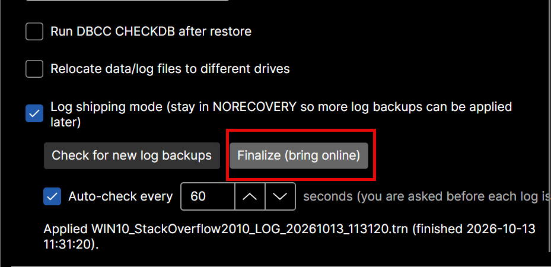<figcaption>Finalize brings the database online. The status line shows the last log that was applied.</figcaption></figure>
    <p>Behind this, the app uses exactly the pattern from <code>sp_DatabaseRestore</code>'s own help: first <code>@ContinueLogs = 0, @RunRecovery = 0</code>, then <code>@ContinueLogs = 1, @RunRecovery = 0</code> for each log, and <code>@RunRecovery = 1</code> at the end. You do not have to remember which is which.</p>
  </section>

  <!-- ======================= ADVANCED ======================= -->
  <section class="scenario">
    <span class="tag">When you need more</span>
    <h2>Advanced options</h2>
    <p>The simple tab covers most incidents. When you need the rest of the procedure, the <strong>Advanced</strong> tab exposes its parameters, grouped by what they do. Change a value and the generated T-SQL updates immediately.</p>

    <div class="tablewrap">
      <table>
        <thead><tr><th>Group</th><th>What it controls</th></tr></thead>
        <tbody>
          <tr><td>Source &amp; target</td><td>Source database, restored name, owner, and what to do if the target already exists.</td></tr>
          <tr><td>Backup locations</td><td>Full / Diff / Log folders, file name prefix, custom extensions, skip backups already in msdb.</td></tr>
          <tr><td>Point in time &amp; chain</td><td><code>StopAt</code>, only logs after a time, restore the differential, continue an existing restore.</td></tr>
          <tr><td>File placement</td><td>Move data, log, FILESTREAM and full-text files to other drives.</td></tr>
          <tr><td>Recovery behavior</td><td>Run recovery or not, STANDBY with an undo file, force SIMPLE recovery, TRUSTWORTHY, fix orphan users, keep CDC, enable Service Broker.</td></tr>
        </tbody>
      </table>
    </div>

    <h3>Dry Run (-WhatIf)</h3>
    <p>The <strong>Dry Run</strong> button connects to the server and asks the procedure to <em>resolve</em> the real statements without executing them. You see the actual <code>RESTORE DATABASE</code> and <code>RESTORE LOG</code> commands, one per file, each with a short comment:</p>
<pre><code><span class="c">-- Restore FULL backup, NORECOVERY (more backups can still be applied)</span>
RESTORE DATABASE [StackOverflow2010_20261013_111138]
FROM DISK = '\\fileserver\...\FULL\WIN10_StackOverflow2010_FULL_20261013_082727.bak'
WITH NORECOVERY, REPLACE,
    MOVE 'StackOverflow2010' TO 'D:\databases\StackOverflow2010_20261013_111138.mdf',
    MOVE 'StackOverflow2010_log' TO 'D:\databases\StackOverflow2010_20261013_111138_log.ldf';

<span class="c">-- Apply transaction log backup, NORECOVERY (more backups can still be applied)</span>
RESTORE LOG [StackOverflow2010_20261013_111138]
FROM DISK = '\\fileserver\...\LOG\WIN10_StackOverflow2010_LOG_20261013_090622.trn'
WITH NORECOVERY;

<span class="c">-- Bring the database online (RECOVERY) - restore chain complete</span>
RESTORE DATABASE [StackOverflow2010_20261013_111138]
WITH RECOVERY;</code></pre>
    <p>A good habit for juniors: run the dry run, read it top to bottom, and only then click <strong>Run Restore</strong>.</p>

    <h3>Overwriting an existing database</h3>
    <p>The default is the safe one: fail if the database exists. Kill connections, take offline and drop are all available, and every one of them stops at a confirmation dialog that you must tick before the button becomes clickable.</p>

    <h3>Everything is resizable</h3>
    <p>Generated T-SQL, the resolved statements and the restore log each have a splitter, so you can make the pane you are reading as large as you like.</p>
  </section>

  <h2>What you need before you start</h2>
  <ul>
    <li><code>sp_DatabaseRestore</code> installed on the instance. The script is bundled with the app under its MIT license.</li>
    <li>Ola Hallengren's <code>CommandExecute</code> in <code>master</code>. <code>sp_DatabaseRestore</code> depends on it.</li>
    <li>The <strong>SQL Server service account</strong> needs read access to the backup share, because all discovery and restoring happens on the server.</li>
    <li>Windows only, by design.</li>
  </ul>

  <h2>Get it</h2>
  <figure class="figure">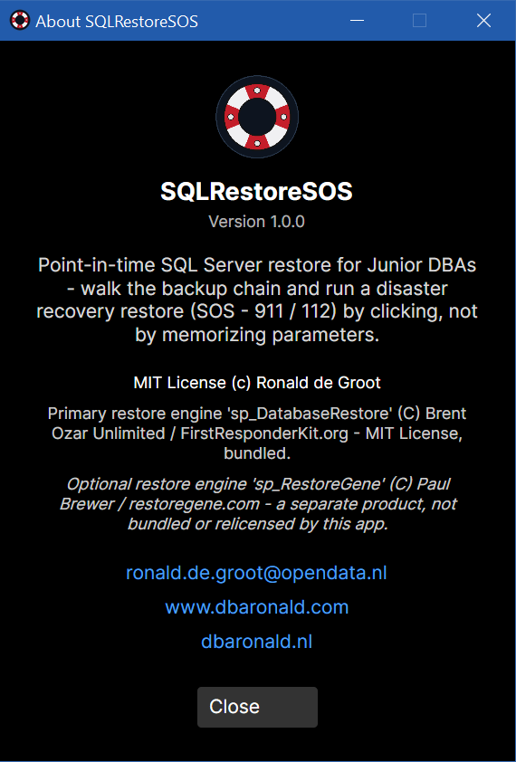<figcaption>The About box lists the licences: MIT for the app and for <code>sp_DatabaseRestore</code>.</figcaption></figure>
  <p>SQLRestoreSOS is open source: <a href="https://github.com/ronaldgithub/SQLRestoreSOS">github.com/ronaldgithub/SQLRestoreSOS</a>. Build it with the .NET 8 SDK (<code>dotnet run --project src\SQLRestoreSOS.App</code>), try it on a test instance first, and tell me what a junior DBA stumbles over. That is the part I want to keep improving.</p>

  <footer>
    <p><code>sp_DatabaseRestore</code> is © Brent Ozar Unlimited / FirstResponderKit.org, MIT license. Ola Hallengren's <code>CommandExecute</code> is part of the SQL Server Maintenance Solution. SQLRestoreSOS only calls these; it does not change them.</p>
  </footer>
</main>
